Кәсіби ұстаным
Жұмыс барысында өзара құрмет, құпиялылық және психологиялық қолдауда дәлелді тәсіл қағидаларын ұстанамын.
Маманның ресми парақшасы
Бұл сайтта оқушыларға, ата-аналарға және әріптестерге арналған материалдар, сондай-ақ білім беру үдерісін психологиялық және түзету бағытындағы қолдау бойынша тәжірибелік ұсынымдар берілген.
Жұмыс барысында өзара құрмет, құпиялылық және психологиялық қолдауда дәлелді тәсіл қағидаларын ұстанамын.
Жоғары психологиялық білім, жас ерекшелік психологиясы, мектептегі мазасыздықтың алдын алу, түзету жұмыстары және білім беру ортасындағы коммуникация бойынша біліктілікті арттыру курстары.
Жеке кеңестер, топтық сабақтар, тақырыптық кездесулер, ағартушылық жарияланымдар және әдістемелік ұсынымдар.
Әрбір білім алушының тұлғалық және оқу жетістіктерін дамытуға мүмкіндік беретін қауіпсіз әрі қолдаушы білім беру ортасын қалыптастыру.
Тесттер, семинар жаттығылары және бөлімдерге бір қысқа жолдан өтіңіз.
Бір сурет — екі мағына; ойлануға арналған қысқа тест.
Туылған айы, суреттер, алма, түйін, жануарлар және басқа интерактивті мәтіндер.
Ұжымдық жаттығулар, медитация мәтіні, семинар құрылымы — жинақталған нұсқаулық.
Оқушы, ата-ана және әріптес үшін қысқа ұсынымдар мен карусель.
Суретті назар салып қараңыз: алдымен не көріп тұрсыз — ит пе, тау ма? Төмендегі мәтіндер — ойлануға арналған, диагноз емес.
Жүрегіңіз жылы, жан дүниеңіз мейірімге толы адамсыз.
Айналаңызға сенім ұялатып, әрдайым қолдау көрсетесіз.
Бірақ кейде өз сезіміңізді тым көп ойлап, өзіңізді екінші орынға қоясыз.
Сіз – мықты, табанды және мақсатынан айнымайтын адамсыз.
Қиындық сізді қорқытпайды, керісінше шыңдай түседі.
Бірақ кейде тым салқынқанды болып, эмоцияңызды жасырасыз.
Ал екеуін бірдей көрсеңіз – сіздің мінезіңізде жүрек пен ақыл керемет үйлескен❤️
Төмендегі мәтіндер ойлануға арналған, ғылыми диагноз емес.
Бұл айда ең төзімді әйелдер дүниеге келеді. Ер мінезді болып келеді. Басындағы мәселені ешкімге айтпай, өзі шешеді. Тамақ пісіргенді жаны сүйеді. Ал, үй жинағанды ұнатпайды.
Бұл айда қырсық әрі ауыр мінезді әйелдер дүниеге келеді. Өте ашулы болғанымен, өзіндік төзімділігі де бар. Олар қиындықтан қорықпай, тез шешім қабылдайды. Алайда, бұл шешімі әр кезде дұрыс бола бермейді. Тез ренжіседі және кек сақтағыш. Адамдармен жақсы тіл табысады, сондықтан жұмыс жағынан жолы болғыш. Кішкентай сәбилерді жақсы көреді.
Өте нәзік жанды әйелдердің өмірге келер мезгілі. Сонымен қоса, өте қырсық. Кей кезде өздерін бақытсыз деп санайды. Өздерінің ұялшақ мінездерінен жетістікке жете алмай да қалатын кездері болады.
Бұл айда туылғандар өздерінің батыл мінездерімен ерекшеленеді. Өздеріне не керек екенін біледі, және соған қарай жәй, бірақ сенімді түрде алға жүреді. Эмоциясы ақылынан артта жүреді.
Сенімді және өз ісіне жауапты жандар. Көп кешіре бермейді. Соның кесірінен күйеуінен айырылысып кетуге дайын. Бірақ, кейін бармағын тістеп қалуы да мүмкін. Ең бірінші орынға ақшаны қоятын жандар.
Шырайлы жаздың бірінші айында өмірге келетін нәзік жандылардын басты жағы — ептілік. Олар өте ренжігіш және кек сақтағыш. Бірақ, өте мейірімділігінің арқасында барлығын ұмытып та кетеді. Өсекті мүлдем ұнатпайды.
Бұл айда өте ұяң және ұялшақ әйелдер өмірге келеді. Олар үнемі барлығын уайымдап жүреді. Өмірінің бар кезін көңіл-күйімен шешеді. Романтикаға берік. Терең сезеді және уайымдайды, бірақ сырттай көрсетпейді. Үй және отбасы — олар үшін бірінші орында.
Ең тәкаппар әйелдер осы айда дүниеге келеді. Сонымен қоса өте мейірімді. Әрбір жерде басшы болғысы келеді. Өзіне еркектерді баурағыш болғанымен, өз сүйіктісін ғана ұнатады. Әрқашан шындық жағында. Бірақ, көп алданады.
Өзін-өзі қатты сүйгіш. Көп ортада болғанды ұнатады. Қызғаншақтығы тағы бар. Ал, әйелдік қасиеттеріне келгенде тазалықты ұнатады. Тамақты өте дәмді әзірлейді.
Қарапайым және бәрінің тілін тапқыш әйелдер. Мәселенің түйінін асықпай ойлана келе шешеді. Көп кешіре бермейді. Бірақ, отбасын сақтап қалуға көп күш жұмсайды.
Өзін сүйгіш және эгоистті. Онымен қоса барлығын үнемдей жүреді. Махаббатқа келгенде өте әсерлі. Терең әрі қатты жақсы көре біледі.
Қорықпайтын және әрбір қиындыққа қарсы тұра білетін әйелдер. Адам таңдамай сөйлесе кетеді, романтикаға берік және өте сенімді құрбысыз.
Жоғарыда алты нұсқа бір суретте көрсетілген. Өзіңізге жақын тұрған нөмірдің мәтінін төменнен оқыңыз — бұл ойлануға арналған, диагноз емес.
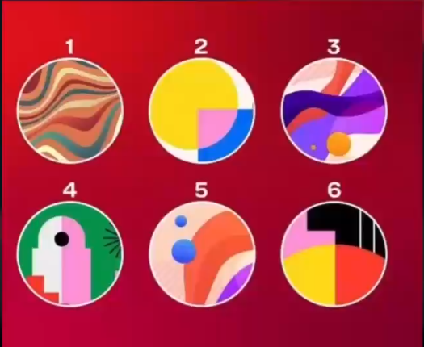
Ағаштағы нөмірленген алманың бірін таңдаңыз; сәйкес мәтінді төменнен оқыңыз. Бұл ойлануға арналған, диагноз емес.
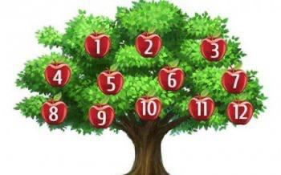
Сіз өзгелерден өзгерексіз, үнемі көңілді жүресіз, адамдармен тез араласып кетесіз. Басқалардан тек жақсылықты көріп, жағымды ойлар ойлайсыз, бұл өзіңіз үшін де жақсы. Жануарларды жақсы көресіз, қызықты фильмдер көріп, әңгіме-дүкен құрған да ұнайды. Романтикалық кештерге қарағанда, жақынмен өткізген жарты сағатты артық көресіз.
Санға қарағанда сапаны жоғары қоятын адамсыз. Әдепті жансыз, күнделікті қайталанатын әдетіңізді бұзғандарды ұнатпайсыз. Сырт көзге өзіңізге сенімді көрінесіз, бірақ іштей өзін-өзі бағалау деңгейіңіз төмен. Ақылды, парасатты жансыз, барлығын бақылауда ұстайсыз. Сізге сақ болу керек, себебі кейде сенімді ақтамайтын адамдарға да сеніп қаласыз. Өзгелерге шабыт беретін әңгіме айтуды ұнатасыз.
Сіз өзгелерге пайдаңызды тигізуді ойлап тұрасыз. Ұйымдастыру жұмыстарында жолыңыз болғыш. Бірақ үйде бәрі басқаша. Жеке өміріңізде тепе-теңдікті табу қиын, жиі жүйкеңіз жұқарады. Барлығын назарда ұстағыңыз келеді, бірақ ол үшін балансты табу керек. Өмірге деген терең көзқарастар қалыптастыруға көбірек уақыт бөліңіз.
Сіз үнемі бір жаққа асығасыз. Тәуліктің жиырма төрт сағаты аздық ететіндей қабылдайсыз. Оңашада ойлануды ұнатпайсыз, сол себепті үнемі айналысатын бір нәрсе табуға тырысасыз. Қатаң тәртіппен жүресіз, бірақ бақытты өмір үшін бұл сізге керек пе, оны да ойлап қойыңыз. Шабыт беретін адамдармен жиі араласыңыз. Бір сәт аялдап, әлемнің рахатын сезінуге уақыт бөліңіз.
Ойшыл әрі мейірімді жансыз, бірақ сізге өмірде эмоциялар жетіспейді. Болашаққа нақты қандай мақсатыңыз бар екенін білмейсіз, алайда пайда әкелерін сезесіз. Не нәрсе бақыт сыйлайтынын, жаныңыз не қалайтынын түсінуіңіз керек. Өмірді сүйесіз, демалысты жақсы көресіз, бірақ сізге бір кез жұмысыңызды да сүйіспеншілікпен істеу керек. Өз қадір-қасиетіңізді арттыра біліңіз.
Сіз еңбекқор әрі өзгермелі адамсыз. Сезімдеріңізді сыртқа шығаруды ұнатпайсыз. Әлемді өзгерте алатыныңызға сеніміңіз мол. Сізбен араласқан адамдар бойыңыздағы қарапайымдылықты жоғары бағалайды. Өмірдің мәнін мұңнан іздейсіз, өз-өзіңізбен жиі торығып отырасыз. Негізінен жайсыздық пен депрессия өміріңізді тек қиындата түседі, сол себепті одан бас тартыңыз.
Сіз уайымшылсыз. Сондықтан өмірдің тосын сыйларына жолықпас үшін, барлығын алдын ала жоспарлап қоясыз. Ауырдың астымен, жеңілдің үстімен жүресіз, ештеңенің байыбына бармайсыз. Шынайы қарым-қатынастан қорқасыз. Қызығушылықтарыңыз бен армандарыңыздың артынан ілесуге жүрексінбеңіз. Жаныңызға шаттық сыйлайтын істі табыңыз.
Жүйкесі тозған, жаңашыл идеяларға бай, жұмбақ жансыз. Жаңа нәрселер ойлап тапқышсыз, бұл өмірге деген көзқарасыңызды батыл көрсетуге көмектеседі. Интроверсияға жаныңыз жақын, іске берілген, терең ойлы жан деп сізді айтамыз. Интеллектіңіз қалыпты, ішкі түйсігіңізге сеніп, шабыттың қайнар көзін іздеңіз.
Сізді басқалар жақсы көріп, сыйлап жүргені өте ұнайды. Парасатты әңгіме, жақсы кітап, жаңа білім, сүйікті әуендер – сіз үшін ең жақсы күннің құрауыштары. Әрдайым кішіпейілсіз, бұл сізге ерекше күш береді. Жетістіктеріңіз арқылы басқаларды басқарғыңыз келеді, бірақ имиджіңізге нұқсан келтіретін бірден-бір жағдай – эгоистік. Айналаға зер салыңыз, сізден де басқа жақсы көруге тұратын дүние жетерлік.
Өте жігерлі жансыз. Уақытты бекер өлтірмейсіз. Идея, мүмкіндік, тәсіл – бар жаңашылдыққа құшағыңыз ашық. Жүйелілікті жақсы көресіз, шығармашылық бағытқа ұмтыласыз. Негізінен өте жақсы жазасыз. Оқуды да, тамақ әзірлеуді де жақсы көресіз. Бірақ әлі басталмаған іске кірісіп кетуден қорқасыз. Әліптің артын бағасыз. «Көз – қорқақ, қол – батыр» екенін естен шығармаңыз.
Көңілді, тапқыр, шығармашылыққа жақын жансыз. Бірақ ештеңеге қол жеткізе алмайсыз. Ауқымды жобаларды жиі қолға аласыз да, орта жолда тастап кетесіз. Себебі қиын не қызықсыз болып кетеді. Адамдар өзін қалай ұстайтыны туралы жиі сөз етесіз. Шындығында, ішкі жан дүниеңіз қай іске қабілетті екенін білмейсіз. Әрдайым қолдауды қажет етесіз. Бойыңызды бос ұстап, заттарға тереңірек үңілуге тырысыңыз.
Көңілді әрі еркетотай адам – ол сіз. Өмірге өте жеңіл қарайсыз.
Суреттегі түйіндердің біреуін таңдаңыз; сәйкес әріпті төменнен оқыңыз. Бұл ойлануға арналған, диагноз емес.
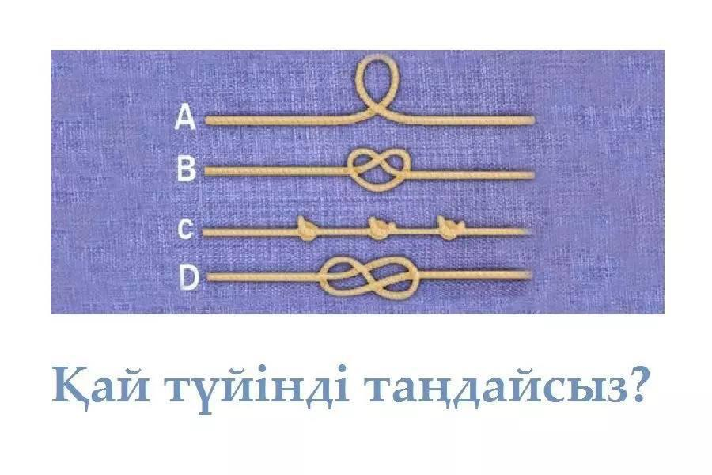
Қызық таңдау. Сіз әмбебап адамсыз. Табиғат сізге барлығын тез игеріп кету қасиетін сыйға тартқан. Сол себепті өзіңізге кез келген хобби түрін таңдап алсаңыз болады. Табандап тұрып алу керек болған жерде ерік-жігеріңіз артып, барлығына үлгеріп жүресіз. Шығармашылық табиғатыңыз бен техникалық ақыл құрылымы бір арнада үйлесім тапқан, сол қырыңызбен елден ерекшесіз. Осы үйлесім кез келген бағытта жеңіске жетуге көмектеседі.
Сіз сандармен «сен» деп еркін сөйлесу үшін жаралған жансыз. Сізге кез келген ғылыми бағыт есігін айқара ашады. IT саласында көптеген жетістікке жете аласыз. Жаңа өнертабыс иесі атануыңыз да ғажап емес. Табиғатты сізге берген бір кемшілігі, өз күшіңізге сенбеуіңіз. Бар күмәнді жеңіп, тек алға басуыңыз керек. Сіз болашағымыздың жарық жұлдызысыз, осыны ұмытпаңыз. Тәжірибе жасаудан қорықпаңыз. Бастысы цифрларға «сенім артыңыз», сонда барлығы жақсы болады.
Сіздің жан дүниеңіз бай, қиял әлеміңіз теңіздей терең, адамдарды жетер жеріне жеткізесіз. Өзгелер сіздің айтқаныңызды екі етпейді, сізге сенім артатыны сонша жер түбіне болса да бірге баруға даяр. Адамдарды сөзіңізге сендіріп, дұрыс бағыт бере аласыз. Сіздің ішіңізде нағыз психолог және от ауызды, орақ тілді шешен жатыр. Керемет жазушы, журналист бола аласыз, адамдарға рухани тұрғыда қолдау көрсетуде сізге жететін жан жоқ. Жақындарыңыздың көпшілігі қиындығын сізбен бөлісіп, кеңес алғысы келетінін байқадыңыз ба? Онда біз қателеспеген екенбіз. Себебі олар сізден жан жетекшісінің бейнесін көреді.
Сіз туа бітті көшбасшысыз. Бойыңызда табандылық қасиет жанып тұр. Кез келген мақсатқа дер кезінде жету себебіңіз де осыдан. Ана сүтімен берілген дарыныңыз осы. Ең қиын деген жағдайдың өзін шешіп, барлық жағдайда барынша жетістікпен аяқтайсыз. Одан бөлек сізден ең жақсы елші шығады. Кез келген адамның тілін табу жолын білесіз. Табиғат берген дарыныңызды пайдаңызға жаратыңыз.
Мына суреттегі бір ғана элементті таңда. Ең бірінші таңдағаның — дұрыс жауап. Бұл ойлануға арналған, диагноз емес.
ҚОРЫТЫНДЫ:
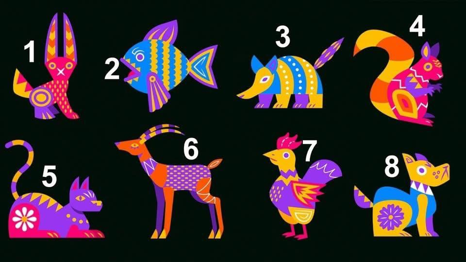
Сен шабыт пен білімге ұмтыласың. Терең мағынасы бар істерді жақсы көресің. Жауаптысың, бос сөзге бармайсың.
Жаныңа еркіндік пен шығармашылық керек. Шектеуді ұнатпайсың, стандарттан тыс ойлайсың, тәжірибе жасауды жақсы көресің.
Өзіңе ғана сүйенесің. Барлығы еңбек пен ақылға байланысты екенін білесің. Табысыңа өзің жол саласың.
Арманшыл, шабытпен өмір сүресің. Шығармашылық ойың күшті, рутина тез жалықтырады. Қарапайым нәрседен әдемілікті көре алатын эстетсің.
Ішкі әлемің терең, интуицияң мықты. Жалғыздықта күш жинайсың. Терең, шынайы қарым-қатынасты бағалайсың.
Үйлесімге ұмтыласың. Адамдармен тіл табыса аласың, бірақ жеке кеңістік те маңызды. Әдемілік пен жаңа тәжірибені жақсы көресің.
Өмірге позитивпен қарайсың. Қиындықта да жақсыны көре аласың. Өз жолыңмен жүргенді қалайсың.
Адалдық пен шынайылықты бағалайсың. Сенімді қарым-қатынас маңызды. Жаныңда адамдар өзін қауіпсіз сезінеді.
Тордағы тоғыз үйдің біреуін таңда — ең алдымен көзің түскен нұсқа. Төмендегі нөмір бойынша оқы. Бұл ойлануға арналған, диагноз емес.
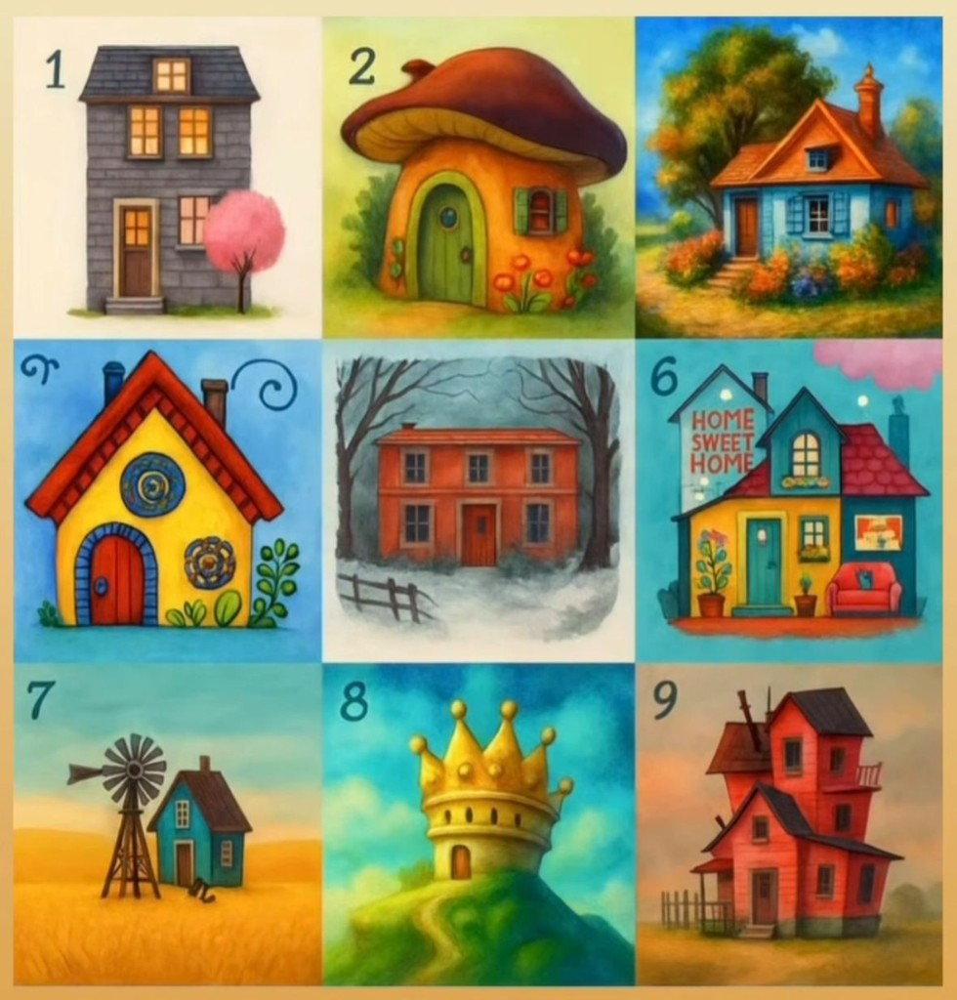
Сен қазір ішкі әлеміңді реттеп, тыныштыққа ұмтылып жүрсің. Жаның тұрақтылыққа сүйенгісі келеді: тәртіпке, жайбарақаттыққа, ішкі үнсіздікке. Көп өзгерістен шаршаған жүрек енді баяулауды, тыныс алуды қалайды. Саған дәл қазір ең қажеті — өзіңе оралып, күш-қуатыңды жинау.
Тереңде мейірімнің, қамқорлықтың жетіспеуі бар. Сен көпке жылулық бересің, бірақ өзің жиі қолдауға зәру боласың. Жаның құшақталуды, тыңдалуды, өз орнын сезінуді қалайды. Қазір саған кішкентай да болса, жанды жылытатын мейірім қажет.
Бұл — өткеннің ауырлығын ақырын босататын кезең. Сен жүрегіңдегі ескі жараларды емдеп, өмірге қайта сенуді үйреніп келесің. Жаның біртіндеп жарыққа толып, ішіне жылуы қайта оралған үй секілді жаңғырып жатыр.
Ішіңде жаңа идеялар оянып, әлемге түс қосқың келеді. Шығармашылық, ойын, еркіндік — жаның дәл қазір соны аңсайды. Бұл — ішкі көктемің, ояну мен жаңғыру кезеңі.
Сен үлкен трансформацияның алдында тұрсың. Ескі сенімдер, ескі әдеттер кетіп, жаңаға орын босатуда. Бұл кезең күрделі көрінуі мүмкін, бірақ ол сені биікке бастайды. Жаның осы уақытта қайта түлеп, жаңаша сомдалып жатыр.
Сен шынайы, терең, ересек сезімге дайынсың. Жаның үйдің жылулығын, жан серік болуды, жүрекке жақындықты қалайды. Бұл — жүрегің ерекше сезімтал, ерекше ашық шақ.
Сен бұрынғы шектеулерден өсіп өттің. Жаның кеңістікті, жаңа жолды, еркін дем алуды қалайды. Қазір саған басқаның даусынан алыстап, өзіңнің шынайы үнді есту маңызды.
Сенде ішкі күштің нығаю кезеңі басталды. Өзіңді таңдауды, өз құныңды сезінуді, тік тұруды үйреніп жатырсың. Бұл — өсу, түлеу, өз қадіріңді қайта мойындау уақыты.
Ұзақ уақыт бойы ішіңдегі ауырлықты, жасырынған сезімдерді жалғыз арқалап келдің. Жаның қазір жұмсақтықты, жанашырлықты, әлсіз болуға рұқсатты қалайды. Бұл — өзгеге сыйлаған мейірімді енді өзіңе қайтаруың керек кезең.
Суреттердегі ой тұжырымдары жеке ойлануға арналған; бұл диагноз емес, жеке кеңес те емес.
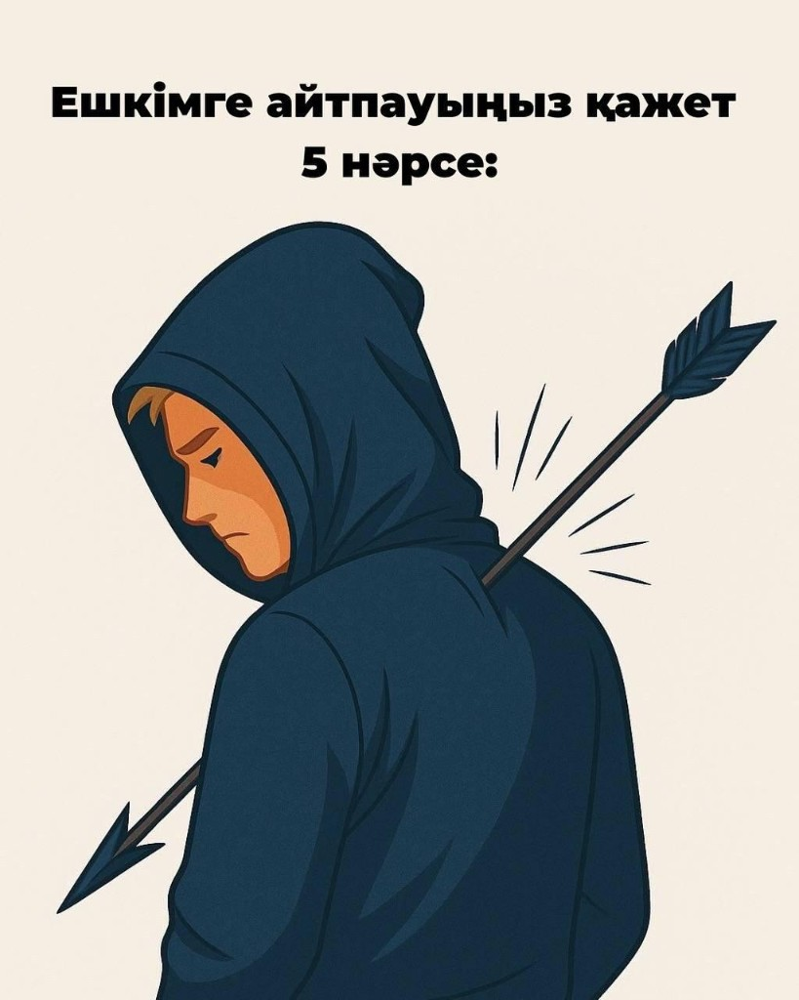
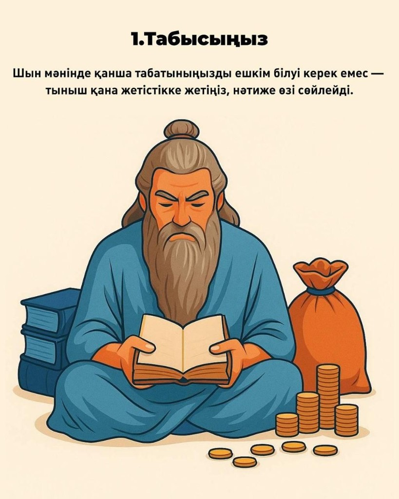
Шын мәнінде қанша табатыныңызды ешкім білуі керек емес — тыныш қана жетістікке жетіңіз, нәтиже өзі сөйлейді.
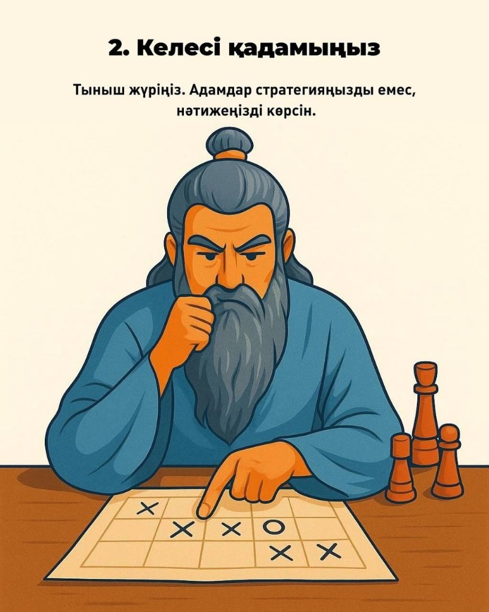
Тыныш жүріңіз. Адамдар стратегияңызды емес, нәтижеңізді көрсін.
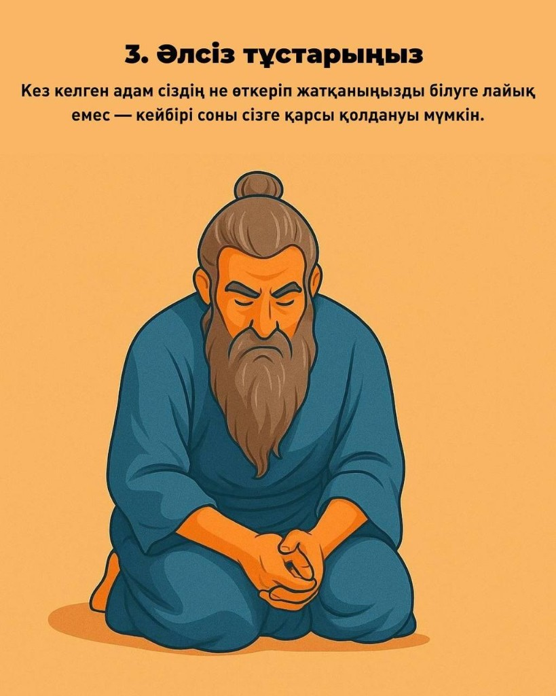
Кез келген адам сіздің не өткеріп жатқаныңызды білуге лайық емес — кейбірі соны сізге қарсы қолдануы мүмкін.
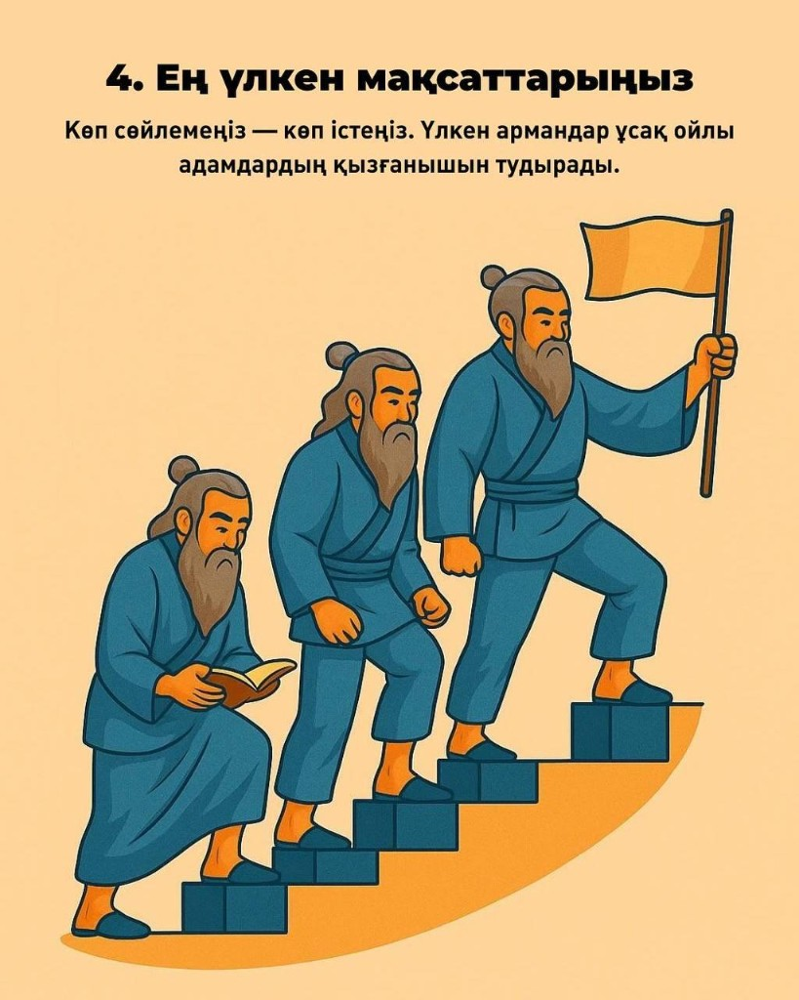
Көп сөйлемеңіз — көп істеңіз. Үлкен армандар ұсақ ойлы адамдардың қызғанышын тудырады.
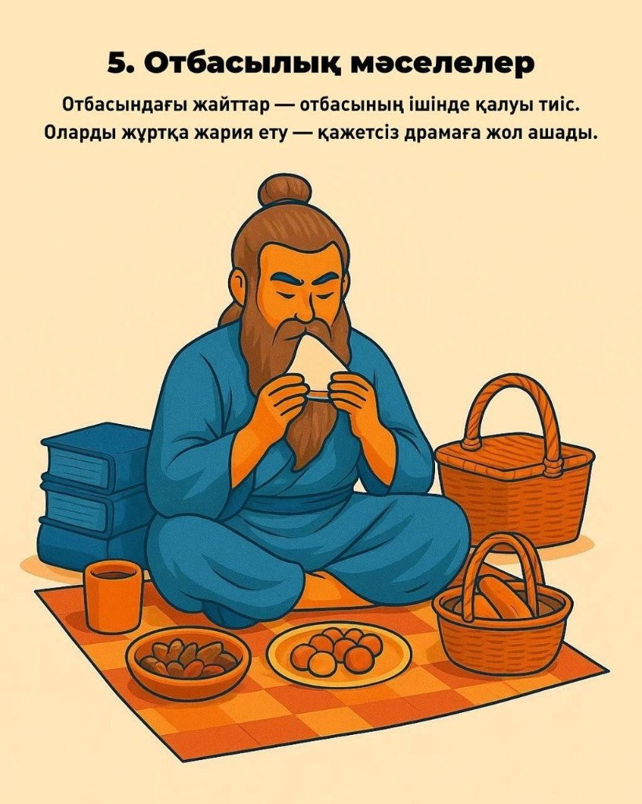
Отбасындағы жайттар — отбасының ішінде қалуы тиіс. Оларды жұртқа жария ету — қажетсіз драмаға жол ашады.
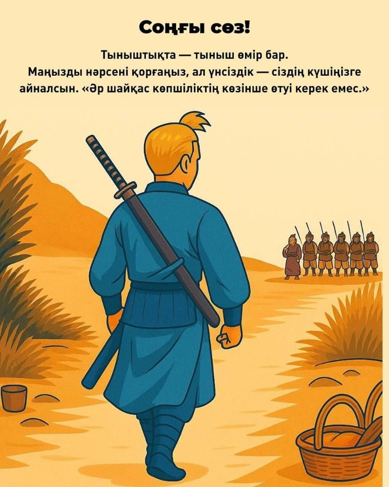
Тыныштықта — тыныш өмір бар. Маңызды нәрсені қорғаңыз, ал үнсіздік — сіздің күшіңізге айналсын. «Әр шайқас көпшіліктің көзінше өтуі керек емес.»
Суретті назар салып қараңыз: ең алдымен не көрдіңіз — алма, көбелек, пышақ па әлде жәндік пе? Сәйкес нұсқаны төменнен оқыңыз. Бұл ойлануға арналған, диагноз емес.
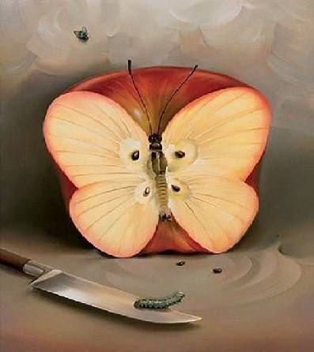
Алманы байқадыңыз ба? Демек сізге қазір ешнәрсені ойламай, тынығу қажет. Сіз өте жомарт, мейірімді жансыз. Кез келген нәрседе қате жібермес үшін өте ұқыпты әрекет етесіз. Әдетте алма жомарттықтың, сабырлылықтың, даналықтың белгісі. Бойыңыздағы күш-қуат, жігер, ынта сізді әрдайым алға жетелейді. Өміріңіз де алмадай дәмді болмақ.
Бірінші көбелекті байқадыңыз ба? Сіздің ойыңыз да, өзіңіз де позитивке толы жансыз. Бір сөзбен айтқанда, бақыт құшағындасыз, қанатыңызды кең жайып, қалықтап жүрсіз. Көбелектер ұзақ өмір сүру мүмкіндігіне ие болмаған. Сондықтан уақытын қызықты, пайдалы етіп өткізуге барын салады. (Әрине, бұл жерде көбелектің өмір сүру ұзақтығының адамдарға еш байланысы жоқ). Бірақ сіз де бақытты, қуанышты сәтті бағалауға, қадірін білуге тырысасыз.
Егер пышақты бірінші көрген болсаңыз, қазіргі уақытта сізді бір ой мазалап жүр. Тез арада сол уайымнан арылу қажет. Ішіңізде сақтап жүрген біреуге деген өкпеңіз болса, оны да шығарып тастаңыз. Бұның барлығы сізді, сіздің ойыңызды, көңіл-күйіңізді жағымсыз жаққа қарай өзгертіп жібереді. Иә, өткенді бір сәтте ұмыта салу оңайға түспес, дегенмен тырысып, тек алдағы күніңізді, болашағыңызды ойлағаныңыз жөн.
Сурет бір қарағанда көз алдыңызға қандай да бір жәндікті елестетті ме? Бұл сіздің қырағылығыңызды білдіреді. Көп жерде кемшілікті бірден аңғарып, оны түзетуге, дұрыс жол тауып шығуға тырысасыз. Сондай-ақ, сіз әртүрлі жағдайға байланысты өз эмоцияңызды көрсеткіңіз келеді, бірақ оны іште бүгіп қаласыз. Олай жасау дұрыс емес. Қарқылдап күлгіңіз келе ме, күліңіз! Айқайлап жылағыңыз келе ме, жылаңыз! Өз сезімдеріңізді тежемеңіз.
Суретте арттан көрінетін бес әйел тұр. Ең алдымен көзіңіз түскен нөмірді таңдаңыз да, төмендегі мәтінді оқыңыз. Бұл ойлануға арналған, диагноз емес.
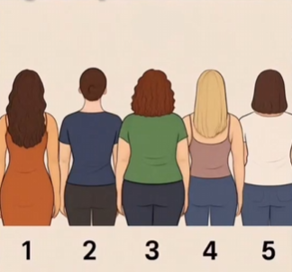
Бұл әйел – сенің ішкі патшайымың. Ол сұлулығын көрсетуден, назар аудартудан, өзін жоғары бағалаудан қорықпайды. Егер сені осы әйел түртсе – демек, сен өз жарығыңнан жасырын жүрсің. Өзіңнің қаншалықты әдемі, тартымды, мықты екеніңді мойындауға әлі де ұялшақтық бар.
Бұл әйел – көп жылдар бойы «ыңғайлы болу», «тыныш жүру», «ешкімнің мазасын алмау» принципімен өмір сүріп келе жатқан тұсың. Егер осыны таңдасаң – сен ішкі даусыңды тұншықтырып, өмірден рұқсат сұрап жүрсің. Бұл ішкі бала – «мен де көрінгім келеді» деп жылап тұр.
Бұл әйел – сенің жараланған әйелдігің. Сен өз денеңді жек көріп, өзгелердің көзқарасы үшін өзіңді тұншықтырып жүрген шығарсың. Егер осы әйелді таңдасаң – бұл сенің ішкі күресің: «мен сондай болмауым керек» деген. Ал шын мәнінде, бұл әйел – саған мейіріммен қарауды үйреткісі келеді.
Бұл әйел – қоғамның идеалы. Арық, мінсіз, әдемі. Бірақ ішінен бос болуы мүмкін. Егер осыны таңдасаң – сен өзіңді идеал болуға мәжбүрлеп, ішкі тыныштықтан айырылып барасың. Бұл – сенің шаршаған перфекционизмің.
Бұл әйел – сенің тыныштығың. Ол ешкімге ештеңе дәлелдемейді. Өз әлемінде, қарапайым, бірақ толыққанды өмір сүреді. Егер осы әйел сені тартса – сен өзіңнің «жеткіліктілігіңді» аңсап жүрсің. «Басқалар секілді болмасам да – мен болуға лайықпын» деген ішкі үн шыққысы келеді.
«Өміріңізде не жетіспейді?» деген қызықты тест дәл қазіргі сәтте жаныңыз не қалайтынын анықтауға көмектеседі. Уақыт өткен сайын жай-күйіңіз де өзгеріп отырады, әр кезде әртүрлі сурет таңдауыңыз мүмкін. Таңдауыңызға 8 сурет ұсынамыз — қай картинадағы жерде болғыңыз келеді?
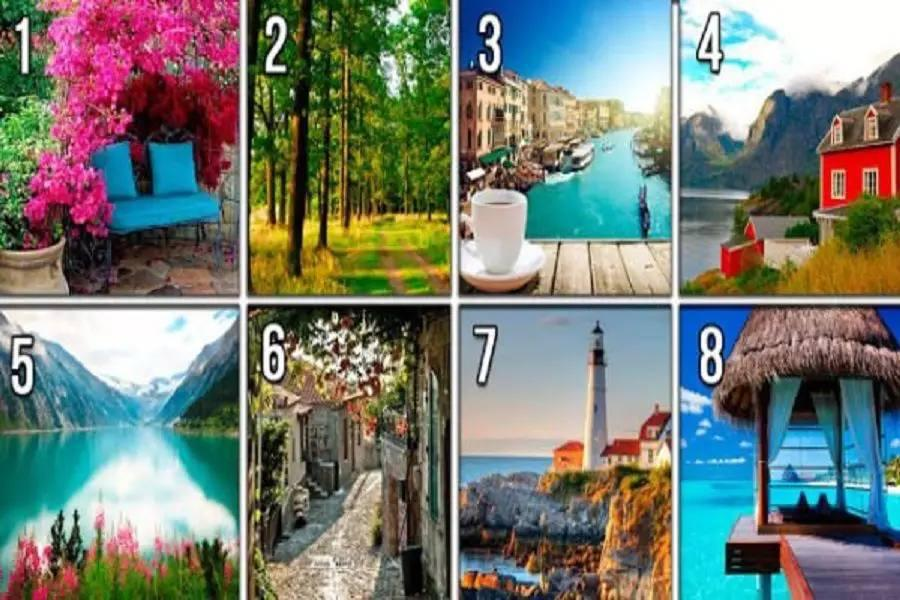
Тест жауаптары
Сізге әңгімелесу, қарым-қатынас жетіспейді. Жай ғана бір-екі ауыз сөз емес, жан дүниеңді ақтаратын сырласу. Ескі досыңызға уақыт тауып, оның да сіз үшін бірер сағатын бөлуін сұраңыз. Таңға дейін ұйықтамасаңыз да ішкі дүниеңізді ақтарып, өткен мен бүгін, болашақ туралы ойларыңызды біреумен бөлісуіңіз керек.
Сізге түбегейлі өзгеріс болмағанмен, бір жаңару керек. Өмірдегі негізгі дүниелерге көңіліңіз толады. Дегенмен кей нәрселерді қазіргіден де жақсарту үшін аздап өзгеріс енгізу қажет. Мүмкін шаш қою үлгіңізді немесе киіну стиліңізді басқаша ету керек шығар? Әлде пәтердегі жиһаздарды жаңартып не орнын ауытырыңыз. Жаңа мамандық түрін игеріп көресіз бе?
Сезімдеріңізді жаңартып, өмірдің мәнін келтіру қажет. Ол бірте-бірте дәмі кетіп барады. Оған өзге елге не басқа қалаға бару көмектесе алады. Өзіңіз үшін әлдебір ерекше нәрселерді байқап көріңіз: биікке шығу, пейнтбол не парашюттен секіру. Бірақ тәуекелге барам деп ақымақтыққа жол беріп жүрмеңіз.
Сізге жай ғана тыныш өмір қажет. Өте шаршаңқы күйдесіз. Ең дұрысы – адам жоқ шалғай жерге кетіп қалыңыз. Пешке от жағып, егін өсіріп, сиыр сауыңыз. Кешкісін жасыл желек сыбдырына құлақ түріп, әбден демалыңыз. Жаңбыр тамшысының тырсылы, жапырақтар судыры жаныңызды тыныштандыра түседі. Мамыргүлдің (сирень) хош иісінен ләззат алып, құстардың шырылына оянғанға не жетсін?!
Сізге бәрінен бұрын бостандық қажет. Қазіргі өміріңізден тұншығып, демігіп жүрсіз. Бетіңізге самал жел ұрып тұрғанын елестетіп, басқа ештеңе ойламауға тырысыңыз. Орныңыздан қарғып тұрып, жүрегіңіз қай жерге шақырса, сол жаққа кетіп қалыңыз.
Сіз қарапайым өмірге зәрусіз. Көкке де көтерілмей-ақ, құзға да түспей-ақ, шектен де шықпай, жай ғана өмір сүргіңіз келеді. Бір нәрсені болса да ретімен келтіріп көріңіз. Қатып қалған режимді бір сәтке болса да тоқтатыңыз. Өз күніңізді жоспарлаңыз. Өзгермеуге тиіс нәрсе болса, ол – жаттығу, түскі ас уақыты және ұйқы алдындағы кешкі серуен. Басқаларын өзгертіңіз.
Сізге әлдебір арман, үміт керек. Бір нәрсеге жету үшін басқасын күту керек. Нақты мүмкіндіктерді іске асыруға арман көмектеседі. Тым үлкен де емес, тым қол жетпес те емес, ертең ақ орындалатын арман ойлаңыз. Сізге арман жолында ең қажеті – еңбек, тәжірибе, төзім және көнбістік.
Сізге ұзақ уақыттық демалыс керек. Ешқандай уайым-қайғы жоқ, күн көп түсетін жерге барыңыз. Күнге күйіп, шоколад болғанша қараюдың қажеті жоқ. Жай ғана күн сәулесіне шомылып, өміріңізді де жылуға толтырыңыз. Қайта оралғанда күш-қуатыңыз тасып, жұмысқа құлшынысыңыз артып келесіз.
Төменде ұстаздар, ата-аналар және оқушыларға арналған топтық жаттығулар мен семинар құрылымы ұсынылған. Қолданбалы материал; жүргізуші қауіпсіз, құрметті атмосфера мен құпиялылықты қамтамасыз етуі тиіс.
Бұл — ұжымдағы сенімділікті арттыруға арналған ең терең жаттығу.
✅ Орындалуы: Барлығы шеңберге отырады. Әр адам кезекпен өзінің жұмыстағы ең үлкен қорқынышын немесе соңғы айдағы ең үлкен сәтсіздігін айтады.
✅ Ереже: Ешкім күлмейді, кеңес бермейді. Келесі адам тек: «Мен сені естідім және бұл сезіміңді құрметтеймін» деп айтып, өз тарихын жалғастырады.
✅ Нәтиже: Қызметкерлер арасындағы «мінсіз болу» маскасы шешіледі. Бұл ұжымды нағыз отбасы секілді жақындастырады.
✅ Әр қатысушының арқасына А4 қағазын скотчпен жапсырып қойыңыз.
✅ Әркімнің қолына маркер беріледі. Тапсырма: 3 минут ішінде бөлме ішінде еркін қозғалып, әр әріптесінің арқасындағы қағазға ол туралы тек жақсы сөздер, тілектер немесе «рахмет» айтқысы келетін істерін жазуы керек. Маңызды: жазу барысында ешкім сөйлемейді, тек жазады.
✅ Қадам — психологтың қорытынды сөзі:
«Қазір арқаларыңыздағы қағазды алып, оқып шығыңыздар. Бұл — сіздің ұжымдағы шынайы бейнеңіз. Көрдіңіздер ме, сіз туралы біз білмейтін қаншама жақсы пікірлер бар. Осы қағазды үйге алып кетіңіз де, көңіл-күйіңіз түскенде оқып тұрыңыз. Сіз бұл команда үшін өте маңыздысыз!»
👩💼 Психолог сөзі: Жұмыста біз көбіне мықты, сабырлы, бақылаушы бейнедеміз. Ал ішкі әлеміміз қандай?
✍️ Қағазды екіге бөлу:
Талқылау: Айырмашылық бар ма? Қай бөлікті көбірек қолдайсыз?
Қорытынды: Көңіл күйді көтерудің кілті — өз шынайылығыңды қабылдау.
🗣️ Қазір кішкентай тәжірибе жасаймыз.
🗣️ Арқаңызды түзеңіз. Иықтарыңызды босаңсытыңыз.
Тағы қайталаймыз. (2–3 цикл)
🗣️ Бұл жаттығу жүйке жүйесін тыныштандырады. Сабақ алдында немесе тест нәтижесін күтуде қолдануға болады. Сіз тыныш болсаңыз – сынып та тынышталады.
Семинар тақырыбы: «Ұстаз ресурсы: күйіп кетуден – шабытқа»
⏳ Ұзақтығы: 1,5–2 сағат · 👥 Формат: интерактив + арт-терапия + коучинг.
👩💼 Психолог сөзі:
🗣️ «Қайырлы күн, құрметті ұстаздар! Бүгін біз тек педагог емес, ең алдымен – адам ретінде кездесіп отырмыз. Сіздер күн сайын білім бересіздер, қолдау көрсетесіздер, шабыт бересіздер. Ал сіздің өз ресурсыңызды кім толтырады?»
🗣️ «Бүгінгі семинар – өзіңізге оралу, өзіңізді тыңдау және өзіңізді қолдау туралы.»
📍 «Менің бүгінгі күйім»: Қатысушыларға түрлі түсті қағаздар таратылады.
❓ Сұрақ: «Қазіргі ішкі күйіңіз қай түске ұқсайды? Неге?»
👩💼 Психолог қорытындысы: «Эмоция – әлсіздік емес. Ол – біздің ішкі компасымыз.»
👩💼 Психолог сөзі: «Эмоционалдық күйіп кету ұғымын алғаш енгізген – Герберт Фрейденбергер. Ал зерттеуші Кристина Маслач бұл құбылыстың 3 негізгі белгісін анықтады:»
❓ Сұрақ аудиторияға: «Сіз өзіңізден қай белгіні байқап жүрсіз?» — қысқа талқылау.
👩💼 Психолог қорытындысы: «Күйіп кету – әлсіздік емес. Ол – ұзақ уақыт өзіңізді ұмытудың нәтижесі.»
Қатысушыларға батарея суреті беріледі.
🖍️ Нұсқаулық: Қуатымды не толтырады? Қуатымды не азайтады? Қай салада мен 0% сезінемін?
👩💼 Психолог сөзі: «Батареяны ешкім сырттан зарядтамайды. Сіз өз ресурсыңыздың авторысыз.» Жұптық талқылау.
Қатысушылар шеңбер сызады. Ішіне: маған күш беретін адамдар; маған қуаныш сыйлайтын іс; демалыс; арман.
👩💼 Психолог сөзі: «Мандала – тұтастық символы. Карл Густав Юнг мандаланы адамның ішкі гармониясының көрінісі деп сипаттаған. Қазір сіз өз ішкі әлеміңізбен диалог жасап отырсыз.» Музыка қоюға болады. Соңында 2–3 адам бөліседі.
✍️ Қатысушылар қағазға жазады: Мен шаршағанымды мойындаймын… Мен өзіме рұқсат беремін… Осы айда мен өзім үшін…
👩💼 Психолог: «Ұстаз болу – миссия. Бірақ өзіңізді құрбан ету – міндет емес.»
Барлығы шеңберге тұрады. Әр адам бір сөз айтады: «Мен … ұстазбын» (күшті, мейірімді, кәсіби, жеткілікті…). Соңында бірге айтады: 🗣️ «Мен ресурсқа лайық ұстазбын.»
✅ Жабылу сөзі: «Сіздер – тек білім беруші емес, болашақ қалыптастыратын жандарсыздар. Бірақ болашаққа жарық беру үшін, өз шамыңыз сөнбеуі керек.»
🗣️ Құрметті ата-аналар, ыңғайланып отырыңыздар. Арқаларыңызды тік ұстап, иықтарыңызды босатыңыздар. Көзіңізді жұмсаңыз болады. Терең дем алыңыз… және баяу шығарыңыз…
🗣️ Тағы бір рет… Дем алыңыз… дем шығарыңыз…
🗣️ Қазір өзіңізді тыныш, қауіпсіз жерде елестетіңіз. Бұл – сіздің ішкі кеңістігіңіз. Осы кеңістікте сіз тек ата-ана емес, ең алдымен – адамсыз. Жүрегі бар, сезімі бар, шаршайтын, бірақ сүйе алатын жансыз.
🗣️ Енді алдыңызға балаңызды елестетіңіз. Оның жүзіне қараңыз. Көзіндегі жылуды, сенімді, кейде қорқынышты, кейде қуанышты байқаңыз. Ішіңізден былай деп айтыңыз: 👇🏻
«Мен сені көремін. Мен сені естимін. Мен сені қабылдаймын. Сен мен үшін қымбатсың.»
Егер жүрегіңізде өкпе, уайым, кінә сезімі болса — оны жоққа шығармаңыз. Тек байқап көріңіз. Ата-ана болу — мінсіз болу емес. Ата-ана болу — үйрену, қателесу, қайта тұру.
🗣️ Өзіңізге де айтыңыз: 👇🏻
«Мен жеткіліктімін. Мен қолымнан келгенін жасап жүрмін. Мен де махаббатқа лайықпын.»
Балаңыз сізден мінсіздік емес, жылу күтеді. Сіздің тыныштығыңыз – оның қауіпсіздігі. Сіздің сеніміңіз – оның қанаты. Енді жүрегіңізден балаңызға жылы жарық жіберіп жатқаныңызды елестетіңіз. Бұл жарық – қолдау, мейірім, сабыр.
🗣️ Бір терең дем алыңыз… Жаймен дем шығарыңыз… Қалаған кезде көзіңізді ашыңыз.
📍 Есіңізде болсын: Бақытты ата-ана – бақытты баланың бастауы.
🎯 Мақсаты: жеке шекара ұғымын түсіндіру; өз сезімін тану; «жоқ» деп мәдени түрде айтуға үйрету; қауіпсіз және қауіпті кеңістікті ажырату.
👩💼 Психолог сөзі: «Балалар, әрқайсымыздың өз кеңістігіміз бар. Мысалы, сөмкемізді біреу рұқсатсыз ашса, бізге ұнай ма? Немесе біреу бізді итерсе ше? Бұл – біздің жеке кеңістігіміздің бұзылуы. Бүгін біз өз кеңістігімізді қорғауды үйренеміз.»
❓ Сұрақтар: Сендерге қандай жағдайда жайсыз болады? Біреу заттарыңды сұрамай алса не сезінесіңдер?
Әр оқушы параққа өзін кішкентай адам ретінде салады. Өзінің айналасына үлкен шеңбер сызады.
Шеңбердің ішіне жазады: менің достарым; мен жақсы көретін нәрселер; маған ұнайтын сөздер.
Шеңбердің сыртына жазады: маған ұнамайтын әрекеттер; ренжітетін сөздер.
Талқылау: Кімнің шеңбері үлкен болды? Неге кейбір нәрселер сыртта қалды?
Балалар жұптасады. Бір бала жайлап жақындайды. Екіншісі жайсыз болған кезде анық, сенімді дауыспен: 👉 «ТОҚТА!» дейді.
Маңызды ереже: айқайламай, күлмей, байсалды түрде айту.
Талқылау: «Тоқта» деп айту қиын болды ма? Қандай сезім болды?
Балалар сөйлемді аяқтайды: «Егер маған бір нәрсе ұнамаса, мен…» «Мен өзімді қорғау үшін…»
🔵 Нәтижесі:

Материалдар тұрақты түрде жарияланады: аптасына кемінде бір рет.
24.02.2026
Сабақ пен емтихан алдында тыныс алу және өзін реттеу бойынша қысқа тәжірибе.
24.02.2026
24 ақпан күні мектеп психологының жылдық жоспарына сәйкес 7 «А» сынып оқушыларымен «Роботтар әлеміне саяхат» тақырыбында психологиялық сабақ өткізілді.
23.02.2026
23 ақпан күні мектеп психологы жылдық жоспарына сәйкес 6 «А» сынып оқушыларымен «Ертегіні аяқта» тақырыбында психологиялық-дамытушылық жұмыс өткізілді.